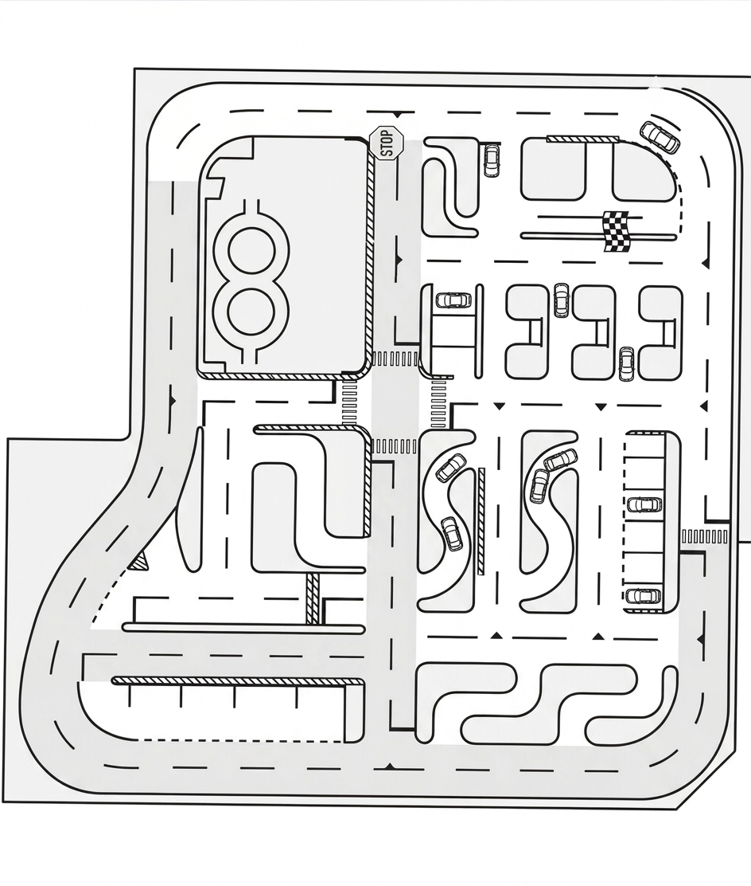

Instructor demonstrations
Show positioning, turning lines, signals, reversing, and stopping points without losing the bigger picture.
A visual workspace for road training
Place vehicles, demonstrate movement, mark landmarks, and draw directly on a realistic driving-ground map. Driving Ground Studio helps instructors and learners make every manoeuvre visible.
Default map source
The included default map was collected from publicly available imagery of Kounodai Driving School. It is included in this app for learning and study purposes only. Anyone using or redistributing it should remain conscious of the applicable usage policy and confirm permission or licensing before public use.
Built for the conversation around the wheel
Show positioning, turning lines, signals, reversing, and stopping points without losing the bigger picture.
Use numbered poles, free-form drawing, and multiple vehicles to compare decisions and explain road situations.
Replay a scenario, explore a route, and build confidence with a clear visual reference before going on the road.
Start in under a minute
Use the default KDS map or browse another driving-ground image.
Add and resize vehicles, position them on the road, and adjust their headings.
Switch to Drive for steering, throttle, brake, reverse, and signal demonstrations.
Draw routes and add small numbered landmarks for precise discussion points.
About the studio
Driving Ground Studio is a lightweight browser workspace for visual road-training conversations. It is designed for classrooms, instructor briefings, study groups, and anyone who learns best by seeing a situation unfold. Everything stays close to the map: the vehicle, the road geometry, the landmark, and the explanation.
Contact and feedback
This is a focused, evolving study tool. Share feedback, teaching scenarios, or map ideas with the project team.
faruk.csebrur@gmail.comPractice board
Current Map
KDS Driving Ground